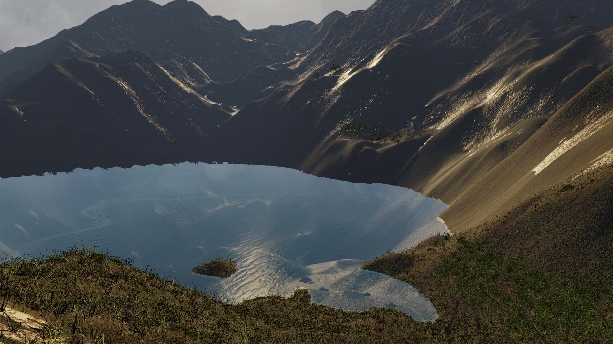
Procedural World Generator
Jak stworzyć świat,który nie istnieje?
Od matematyki do wirtualnego krajobrazu.
Seminarium dyplomowe · Proceduralne generowanie świata
na potrzeby gier i symulacji. Analiza algorytmów.
na potrzeby gier i symulacji. Analiza algorytmów.
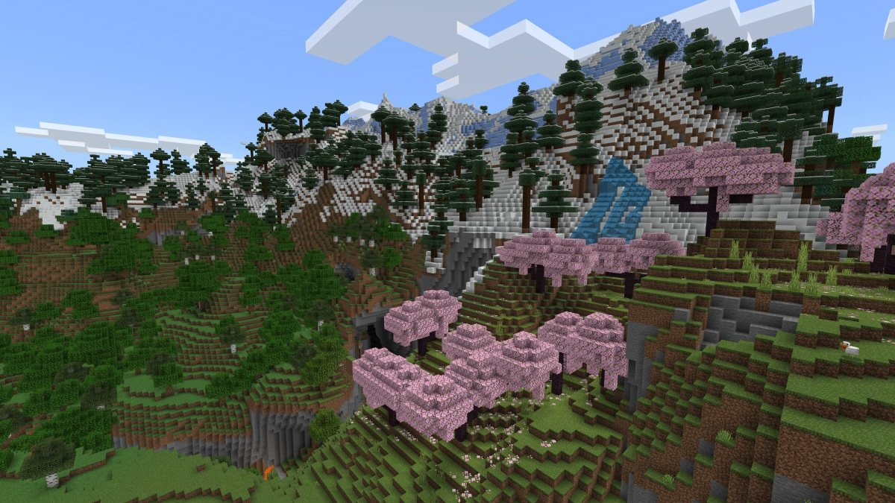
Minecraft© Mojang Studios · minecraft.net
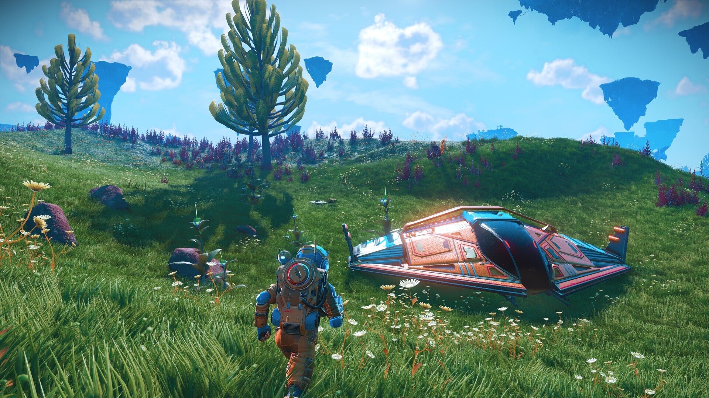
No Man's Sky© Hello Games · Steam
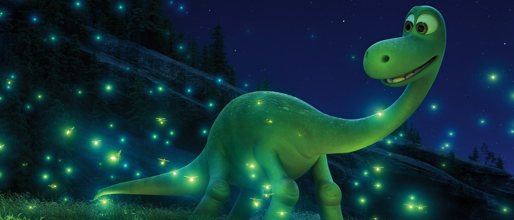
Dobry dinozaur (2015)© Disney / Pixar · disney.com
Kto stworzył te światy?
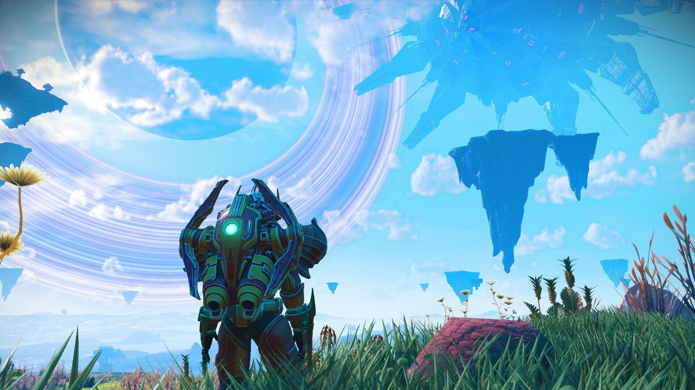
Jeden algorytm.Miliony możliwości.
No Man's Sky © Hello Games · zrzut ekranu ze strony Steam
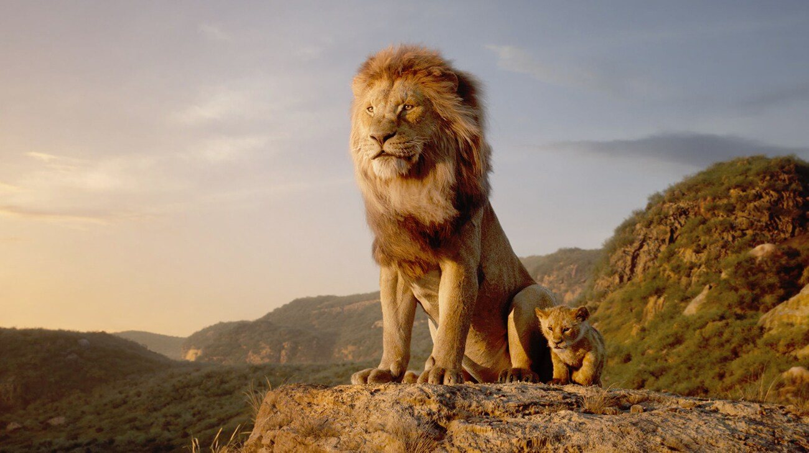
Król Lew (2019)© Disney · disney.com
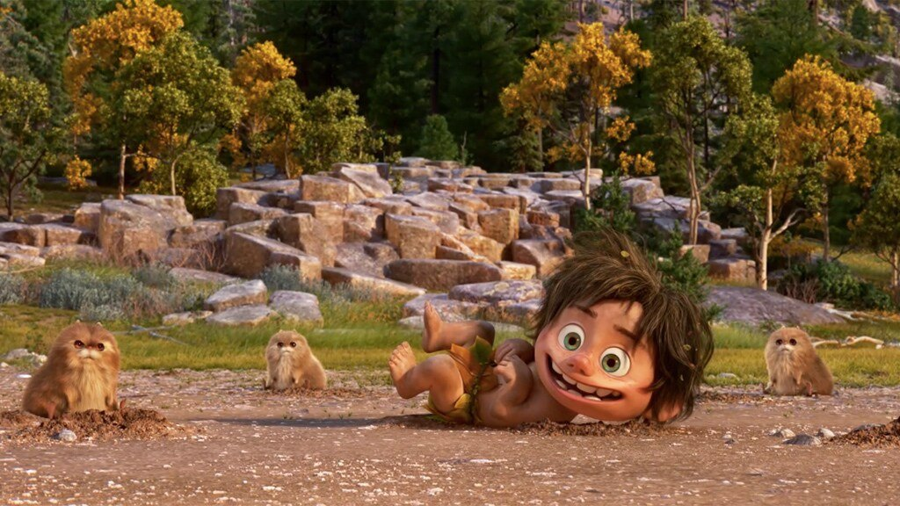
Dobry dinozaur (2015)© Disney / Pixar · disney.com
Nie tylko
gry.
Render offline
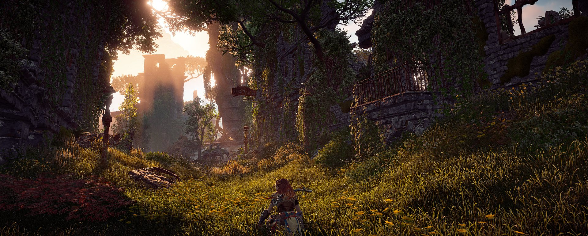
Gra
Czas
rzeczywisty.
16,7ms
na całą klatkę przy 60 FPS
Horizon Zero Dawn © Guerrilla / Sony Interactive Entertainment · zrzut ekranu ze strony Steam
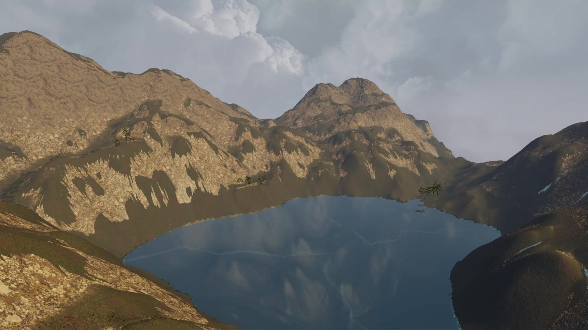
PWG
Procedural World Generator
C++20 · OpenGL 4.5 · GLSL
Od liczb do krajobrazu.
heightmapa · szum z FastNoiseLite
Zmieniasz parametry.
Zmieniasz świat.
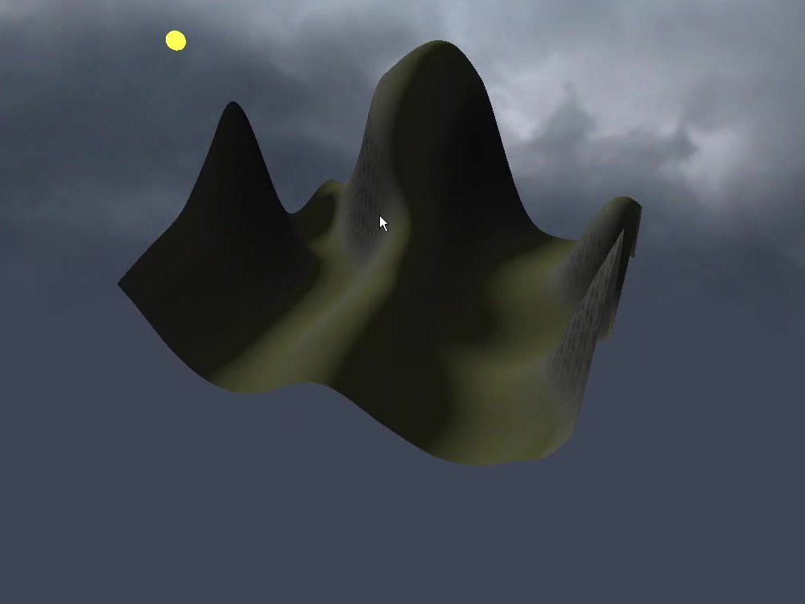
A
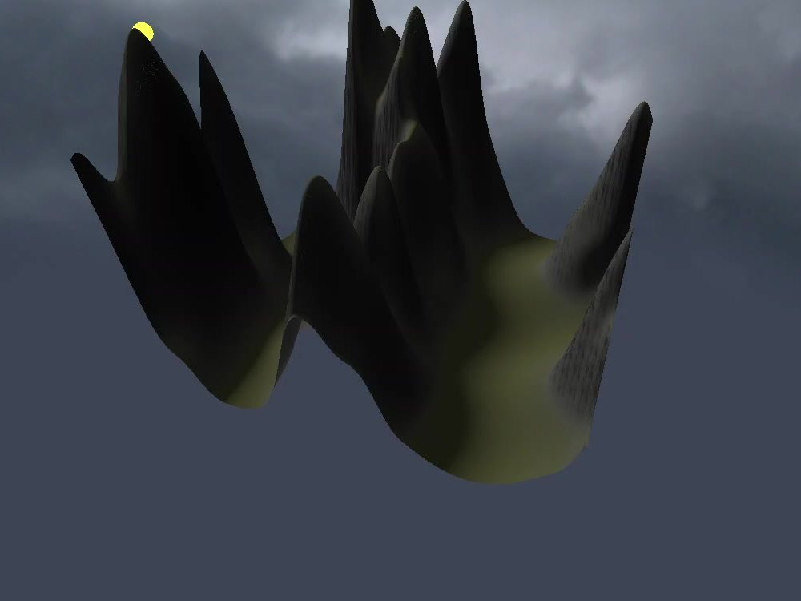
B
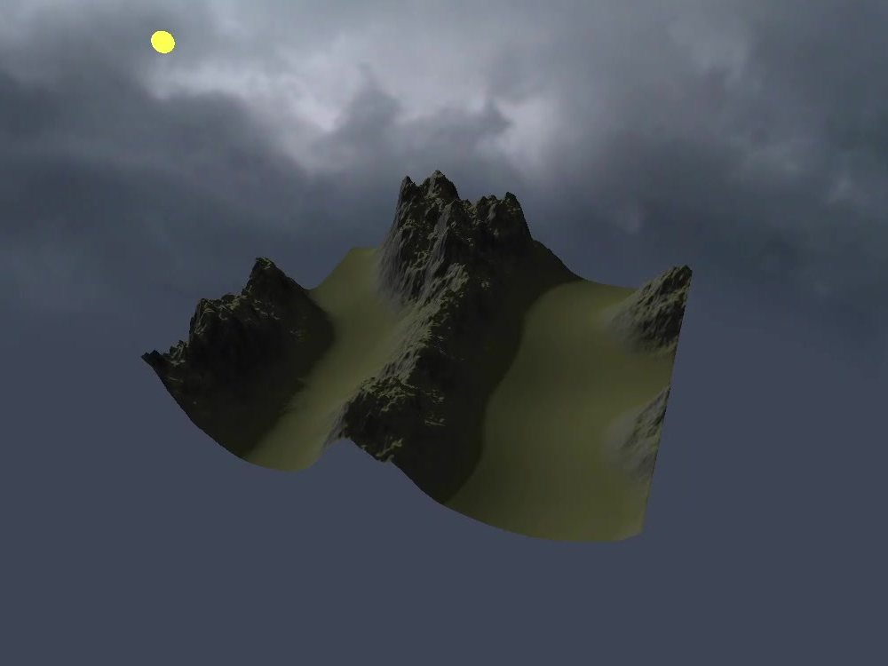
C
Ten sam seed → ten sam świat.
Jeden szum nie wystarczy.
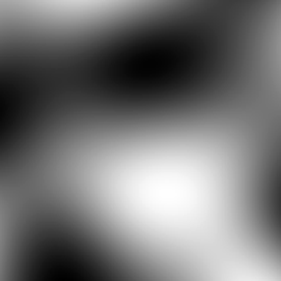
Elevationogólne ukształtowanie
Mountain Maskgdzie mają być góry
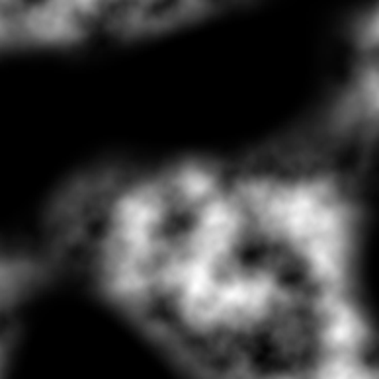
Mountain Heightszczegół gór
Σ
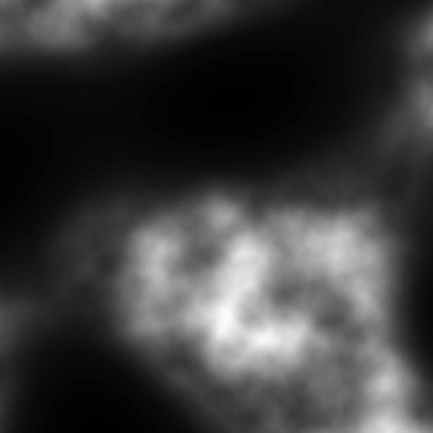
Final Heightważona suma warstw
Od operacji do pipeline'u.
Wynik jednego kroku = wejście następnego · walidacja: cykle, brakujące wejścia, typy portów
Natura
zmienia teren.
szum
po erozji
osad
PWG: erozja hydrauliczna + termiczna · zaimplementowane (GPU)
Nagranie z PWG · symulacja erozji na GPU · białe punkty to cząstki wody
Kto wykonuje obliczenia?
CPU
komórka po komórce
→
GPU
wszystkie naraz
Compute Shaders · OpenGL 4.5 · grupa robocza 8 × 8 wątków
Chunki.
Mapa podzielona na fragmenty
od 3 × 3 do 31 × 31
Poza kamerą? Nie rysujemy.
frustum culling
Ilustracja poglądowa · podział i culling zgodne z ChunkManager w PWG
LOD — Level of Detail.
LOD0128 × 128
32 768 △
32 768 △
LOD164 × 64
8 192 △
8 192 △
LOD232 × 32
2 048 △
2 048 △
LOD316 × 16
512 △
512 △
LOD48 × 8
128 △
128 △
blisko kamery → daleko
PWG w praktyce.
P / klik — odtwórz lub zatrzymaj
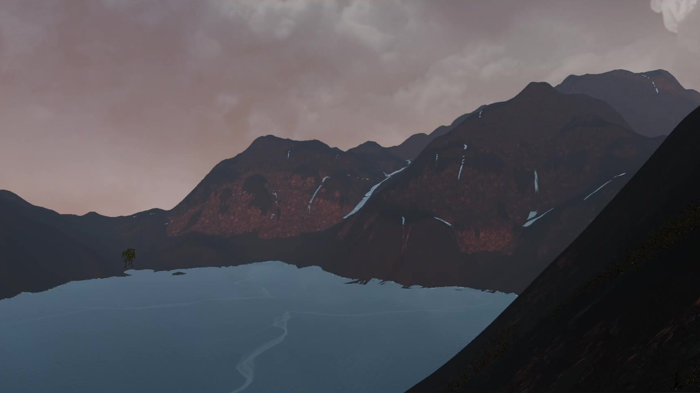
Czy ten świat działa poprawnie?
Powtarzalność
ten sam seed → identyczna heightmapa
test porównawczy: planowany
test porównawczy: planowany
Poprawność
rzeki płyną w dół, tafla jezior jest pozioma
ocena wizualna i debug: wykonane
ocena wizualna i debug: wykonane
Wydajność
czas grafu, erozji, hydrologii · FPS · pamięć
pomiary: planowane
pomiary: planowane
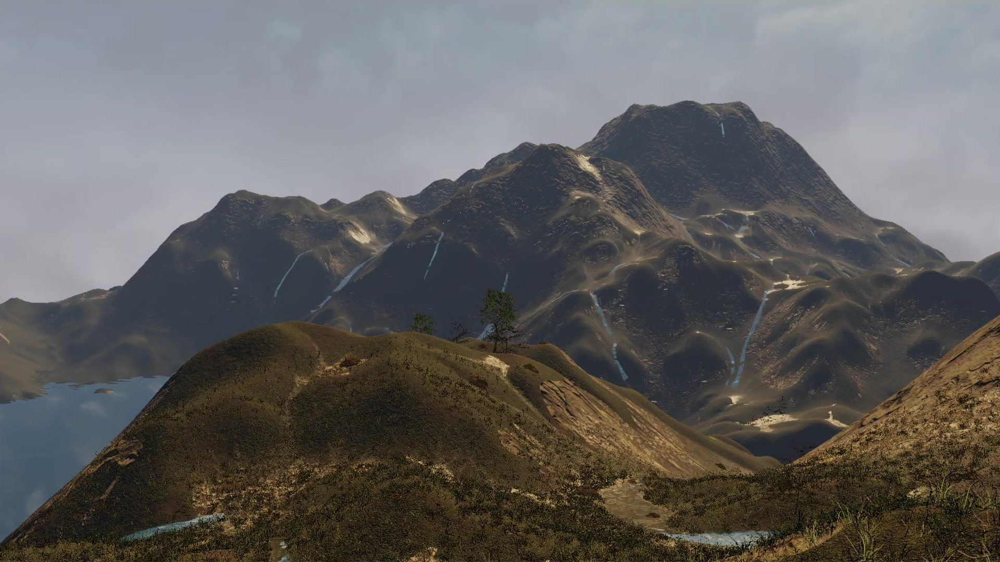
Świat nadal się rozwija.
Erozja
wiele etapów symulacji w jednym grafie
Woda
od jednorazowej hydrologii do dynamicznego przepływu
Optymalizacja
pomiary, profilowanie, wąskie gardła
Zrzut ekranu z silnika PWG
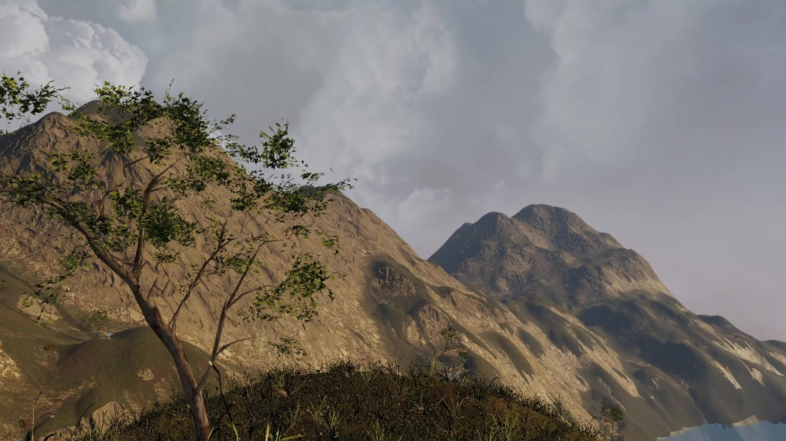
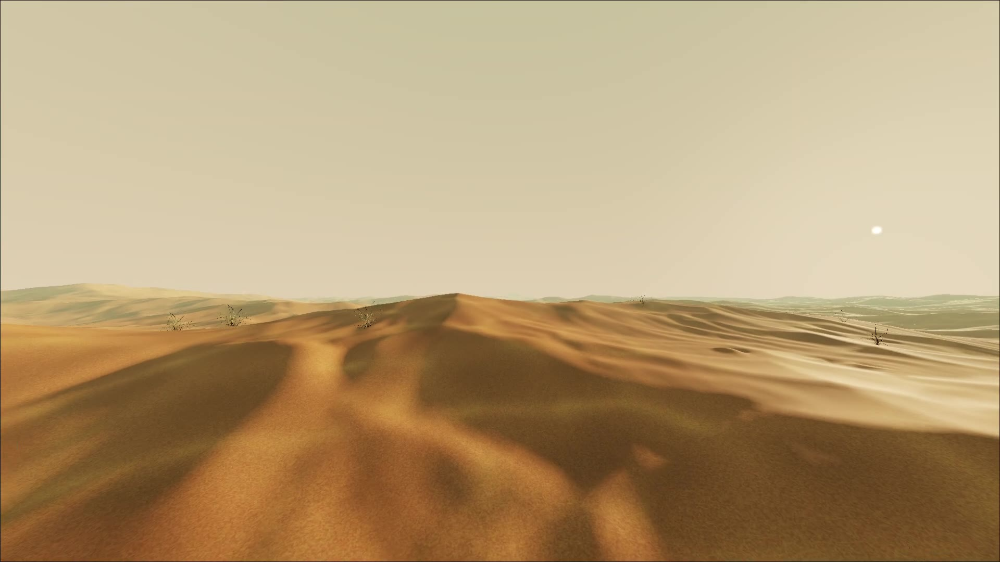
Nie stworzyłem jednej mapy.
Stworzyłem sposób
na tworzenie wielu.
na tworzenie wielu.
PWG — Procedural World Generator · dwa światy z tego samego silnika